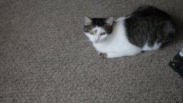
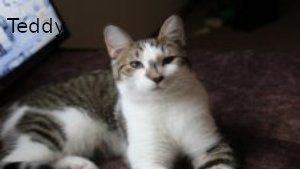

by Francis Whitman
Oh, what unhappy twist of fate
Has brought you homeless to my gate?
The gate where once another stood
To beg for shelter, warmth, and food
For from that day I ceased to be
The master of my destiny.
While he, with purr and velvet paw
Became within my house the law.
He scratched the furniture and shed
And claimed the middle of my bed.
He ruled in arrogance and pride
And broke my heart the day he died.
So if you really think, oh Cat,
I'd willingly relive all that
Because you come forlorn and thin
Well...don't just stand there...Come on in!
my cats
T-cup and Teddy asleep together

T-cup, 2 years old

Teddy, 1 year old
3- Legged Mama. T-cups mama, Teddys Grandma
Now I live with 2 cats: T-cup and his nephew Teddy. T-cup is 2 years old and Teddy is1 year old.